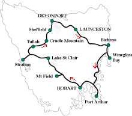 | When I asked about Tasmania, eveyone encouraged me to go to Tasmania. Although Tasmania looks small, it is larger than "Kyousyu Island" in Japan which includes my hometown, Fukuoka City, and it is smaller than my hometwn in population. In Tasmania there are some natural parks keeping nature and beauty. I took part in a tour and the intinerary is as below. In addtion I put my pictures in it. During the tour I walked more than three hours eveyday and we had to make most meals by ourselves. We had lunch at scenic places which we made there or we made early in the morning. Moreover I stayed motels on the sea, near a lake or in a forest, enjoying nature. Tasmania is full of nature. 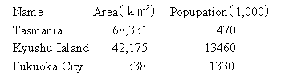 |
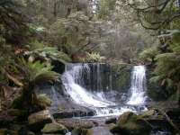 | 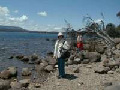 | Departing Hobart we travel to Mount Field National Park where we hike to Russell Falls and join the 'Tall Trees' Walk where you will see the world's tallest flowering plant - the Swamp Gum. We continue on to picturesque Lake St Clair (the deepest lake in Australia) for lunch then head to the historic mining town of Tullah via Queenstown, doing various walks along the way. We stay overnight at the cosy Tullah Lakeside Chalet, surrounded by lakes and mountains. (LD) |
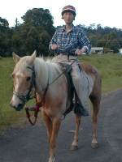
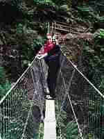
We hike to Montezuma Falls, Tasmania's highest waterfall, through stunning rainforest. We visit the awesome Henty Sand Dunes where you can explore on foot, take a quad bike tour (optional extra) or go sand boarding (FREE - weather permitting). Later we call in at the picturesque coastal village of Strahan before returning to Tullah where you can catch your breath or go canoeing on Lake Rosebery (FREE), mountain biking (FREE) or enjoy a horse ride through the surrounding hills (optional extra.) Overnight Tullah Lakeside Chalet. (BLD)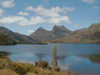 | 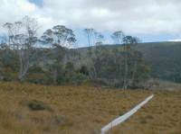 | Discover the World Heritage Cradle Mountain National Park. Enjoy a guided walk around beautiful Dove Lake or challenge yourself with a more strenuous bush walk (unguided) exploring this spectacular area. This afternoon we further explore the mid north of the state before finishing in Devonport. (BL) |
| Leaving Devonport we travel in the shadows of the Great Western Tiers to Launceston to explore Cataract Gorge, we then head across to the east coast taking in the views of Stacks Bluff & Legges Tor, some of Tassie's highest peaks. We explore secluded beaches and swim in crystal clear waters (weather permitting) before visiting the wildlife park to get up close and personal with some Tassie Devils and other locals! At night we can take a look at the little penguins that make the shores of Bicheno their home (optional tour available). O/night Bicheno (LD) | 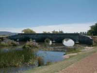 | 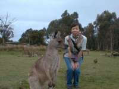 |
Day 5 - Freycinet to Port Arthur |
||
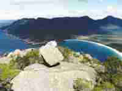 | 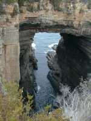 | We spend most of the day experiencing the stunning Freycinet National Park. Tackle the challenging climb up Mount Amos for fantastic views over world-renowned Wineglass Bay or hike to Wineglass beach via the lookout for a refreshing swim at one of the world's best beaches. We continue south to Port Arthur enjoying a great ice -cream stop and rain forest walk on the way. Tonight, you can experience the famous Port Arthur Ghost Tour (optional extra) and maybe meet some past convicts! O/night Port Arthur (BLD) |
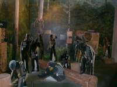
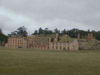
The morning is spent exploring the Port Arthur Historic Site, which served as a penal colony from 1830 to 1877 and a boat cruise around the harbour, viewing the 'Isle of the Dead' where more than 1100 convicts and soldiers are buried. After lunch we visit Remarkable Cave and a variety of sites on the Tasman Peninsula before heading to Hobart in the early evening. (BL)